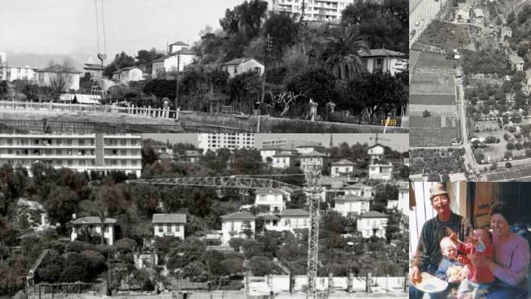

Bienvenue à La Ferme Bermond
Premier espace social et écocitoyen au cœur de Nice, dédié à l'éducation et à la durabilité.
Planifiez votre visiteHistoire de la Ferme
Créée en 1969, la Ferme Bermond a évolué d'une exploitation agricole traditionnelle à un acteur clé de la communauté locale, intégrant des pratiques durables et éducatives.
En 2017, la ferme devient une association sous le nom de "La Ferme Bermond - les amis de Vincent".
Nos Activités et Produits
Le Potager
Découvrez nos pratiques agricoles et participez à la culture de nos produits frais.
Ateliers Éducatifs
Participez à nos ateliers pour apprendre l'agroforesterie et la cuisine antigaspi.

Visites Guidées
Profitez d'une visite guidée pour découvrir nos activités et nos projets.
Fonctionnement de la Ferme
La ferme est gérée par des bénévoles passionnés et des adhérents qui s'engagent pour le bien-être de tous. Nous valorisons le travail communautaire et la coopération.

Équipe
Rencontrez les membres dévoués qui font vivre la ferme et ses projets communautaires.
Vincent Bermond
Fondateur et gestionnaire principal de la ferme.
Équipe Bénévole
Nos bénévoles travaillent dur pour maintenir la ferme florissante.
Partenaires
Nous collaborons avec des partenaires locaux pour soutenir nos initiatives et élargir notre impact. Leur soutien est essentiel pour le développement durable de nos projets.

Visiter la Ferme
Planifiez votre visite et découvrez nos programmes et activités éducatives pour tous les âges.
Horaires : Lundi - Vendredi : 9h - 18h
Adresse : 4 Bd Paul Montel, 06200 Nice